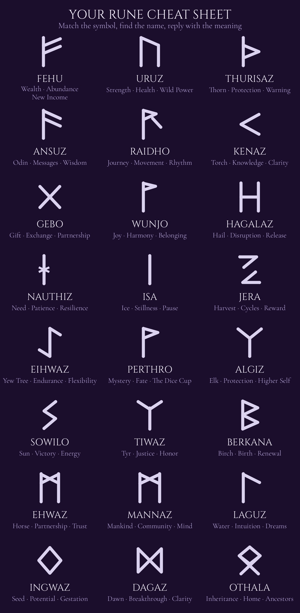

You're in!
Here is your free Rune Cheat Sheet
Thank you for joining the PrintCutConjure list. Your free printable is below — all 24 Elder Futhark runes with their meanings, in my purple & silver design. Save it, print it, and keep it with your journal.


Love the cheat sheet? It comes from my Book of Runes & Witch Symbols (33 pages) — and everything in the shop is 30% off through December 2. Watch your inbox: a fresh free printable lands every week.